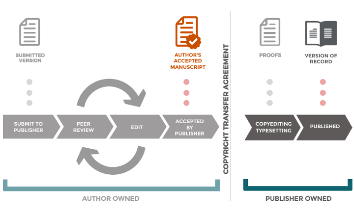

What is the purpose of the RRS ?
The Rights Retention Strategy, translated in French as Stratégie de non céssion des droits, aims to empower open access. It is an initiative from a consortium of research funders, the cOAlition S, who promote immediate open access to research.
How does it work ?
At the beginning of the submission process, the authors state to the publisher that they have already applied a CC BY licence to the current version and any future versions of their author manuscript. Thanks to the CC BY licencing the authors are free to deposit the accepted version of their paper in an open access repository like HAL or Zenodo.
What is a CC BY licence
The most common Open Access licence :
CC : Creative Commons licenses give everyone from individual creators to large institutions a standardized way to grant the public permission to use their creative work under copyright law. From the reuser’s perspective, the presence of a Creative Commons license on a copyrighted work answers the question, “What can I do with this work?”.
BY : license allows reusers to distribute, remix, adapt, and build upon the material in any medium or format, so long as attribution is given to the creator. The license allows for commercial use.
creativecommons.org/about/cclicenses/
How to apply the RRS ?
In its simplest form :
- Add the following sentence in the acknowledgments section of your manuscript before submitting it to a journal
For the purpose of Open Access, the author has applied a CC BY public copyright licence to any Author Accepted Manuscript (AAM) version arising from this submission
-
Submit your manuscript to a publication venue to undergo peer-review. You can already share the preprint version on a repository
-
Once your paper is accepted for publication, deposit the current version (named “Accepted Author Manuscript”) in a repository
-
That’s it !
What is the Author Accepted Manuscript
and the Publisher Version ?
There are basically three steps in the publication process, corresponding to three versions :
- Preprint, (or first submission version) is the version you submit to a publisher
- Author Accepted Manuscript (AAM) is the one after the reviewing process and before the layout work done by the publisher
- Publisher version is the one with the journal and publisher logos, where the final layout has been done

Credit : Office of Scholarly Communication, University of Cambridge, CC BY.
What is the idea of the RRS ?
The idea of the Rights Retention Strategy is that the author retains their rights to use and share their work online. Under some models of academic publishing the publisher would ask the authors to sign a Copyright Transfer Agreement to sign away almost all of the authors rights to their own work - this practice is unnecessary and perhaps undesirable.
When RRS is applied, the author retains the rights on the preprint and the Author Accepted Manuscript and can make those versions openly available through a repository with a CC BY license.
How do you get the publications listed in that website ?
Practically-speaking, this data has been colleced by querying for papers in the French repository HAL where the key sentence the author has applied a CC BY public copyright licence has been inserted.
How often will the data be updated?
Once per month.
Please describe the columns of the table (data schema)
- HAL URI
The HAL URI (Uniform Resource Identifier) of the deposit.
- genre
The document type of the publication (either book, article, proceedings, or preprint).
- publisher
If any provided, the name of the publisher.
- publisher vers. is oa
Is the publisher version available in open access at the publisher website. The open access determination for this comes from the Unpaywall API.
- European/ANR project
Indicates if the publication comes from an European or ANR project (the main French government research funder, Agence Nationale de la Recherche). /!\ true only if the dedicated metadata in HAL has been fill. cf. the HAL documentation “Adding an ANR project” and “Adding an european project”.
- deposit date
The date when the fulltext deposit in HAL was made.
More information on the RRS
-
See the guide Implementing the rights retention strategy for scientific publications from the French Committee for Open Science. FR version
-
See the dedicated page on the cOAlition S website.